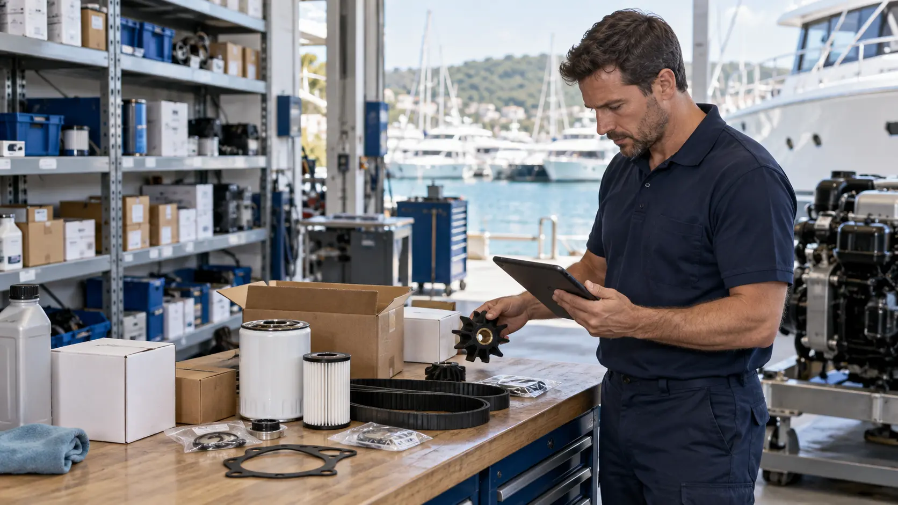

Seri numarasıyla doğru parça
Marin yedek parça desteği
Motor ve jeneratör sistemlerinde doğru parçanın seçimi arızasız bir seyir için hayati öneme sahiptir. Seri numarası ve teknik kataloglar üzerinden tam uyumlu parça tedariği sağlıyoruz.
Hata payı olmayan parça seçimi.
Yanlış filtre, uyumsuz impeller veya standart dışı bir conta motorunuza büyük hasarlar verebilir. DM MARİN olarak her parçayı motor kodu ve üretim yılı ile eşleştiriyoruz.
Sık sorulan sorular
Parça tedarik süreci
Motor Bilgisi
Marka, model ve motor seri plakası.
Parça Eşleme
Şasi ve katalog üzerinden OEM kod tespiti.
Fiyat & Teslim
Stok durumu ve teslimat takvimi paylaşımı.
Montaj & Garanti
İsteğe bağlı sahada uzman montaj desteği.